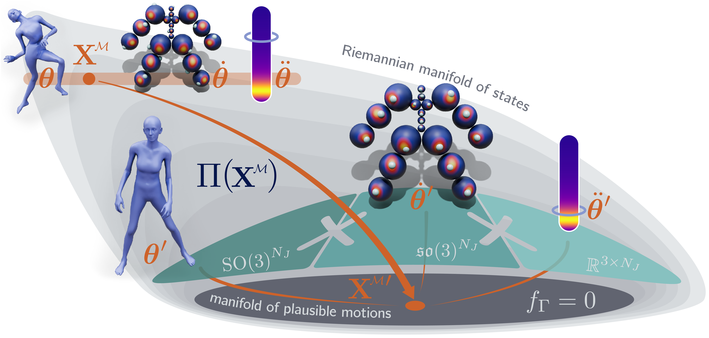
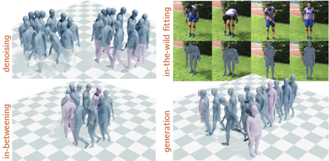

Method Overview
NRMF is a general-purpose, expressive and robust unconditional motion prior. It models the space of plausible poses (\(\theta\)), transitions (\(\dot{\theta}\)), and accelerations (\(\ddot{\theta}\)) on the zero-level set of a geometric neural distance field. This implicitly captures the data distribution. Poses are depicted alongside their transitions and accelerations, which are visualized as blue dots onto the per-joint distributions of learned transitions and as blue rings around the magnitude distribution of all accelerations.

We develop projection (\(\Pi\)) and integration algorithms to deploy NRMF into several applications as shown: (i) Motion Denoising from Noisy Observations, (ii) Motion Estimation on In-the-wild Videos, (iii) Motion In-betweening (iv) Motion Generation.

NRMF learns to represent the space of realistic human motion by modeling the zero-level sets of three neural distance fields over {\(\theta\), \(\dot{\theta}\), \(\ddot{\theta}\)}. Each component is trained to predict the distance to the manifold of plausible motion states using motion capture data. The pose field learns which joint configurations are human-like, the transition field captures temporal consistency across frames, and the acceleration field enforces second-order realism by modeling smooth and plausible dynamics. These fields enable projection-based inference and allow NRMF to robustly reconstruct temporally consistent and physically plausible motion.